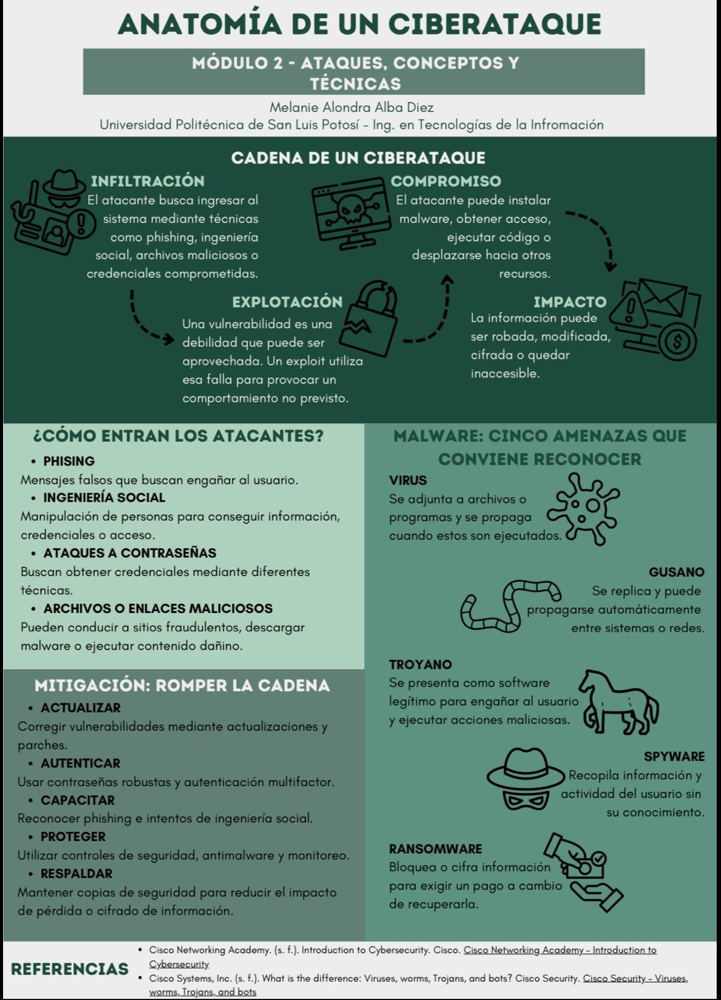

Actividad 14
Ciberseguridad en una mirada
Infografía sobre el Módulo 2: Ataques, conceptos y técnicas, del curso Introducción a la Ciberseguridad de Cisco Networking Academy.
Objetivo
Diseñar una infografía que explique de manera visual, clara y sintetizada los principales conceptos relacionados con los ciberataques, abordando su proceso de infiltración, explotación, compromiso e impacto, así como algunos tipos de malware, métodos de infiltración y medidas de mitigación, con el propósito de facilitar la comprensión de las amenazas y prácticas de protección dentro de la ciberseguridad.
Infografía
La infografía Anatomía de un ciberataque representa de forma visual las principales etapas que pueden intervenir en un ataque, desde la infiltración inicial hasta el impacto sobre la información o los sistemas. Además, integra ejemplos de malware, métodos utilizados por los atacantes y medidas de seguridad que permiten reducir los riesgos asociados.

Conclusión
La elaboración de la infografía permitió integrar de manera
sintetizada diferentes conceptos relacionados con los
ciberataques y comprender la relación que existe entre los
métodos de infiltración, la explotación de vulnerabilidades,
el malware y las consecuencias que pueden generar sobre los
sistemas y la información.
Asimismo, permitió identificar que la protección no depende de
una sola medida de seguridad, sino de la aplicación conjunta de
acciones como mantener los sistemas actualizados, utilizar
mecanismos de autenticación, capacitar a los usuarios,
implementar herramientas de protección y conservar copias de
seguridad.